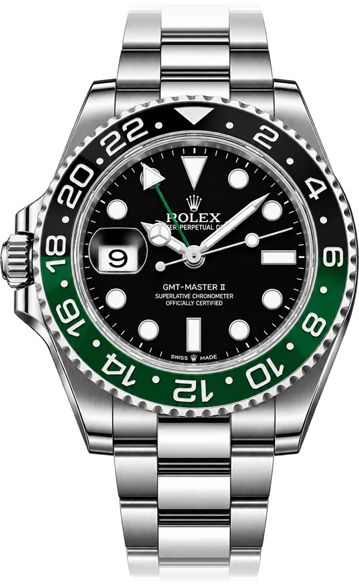
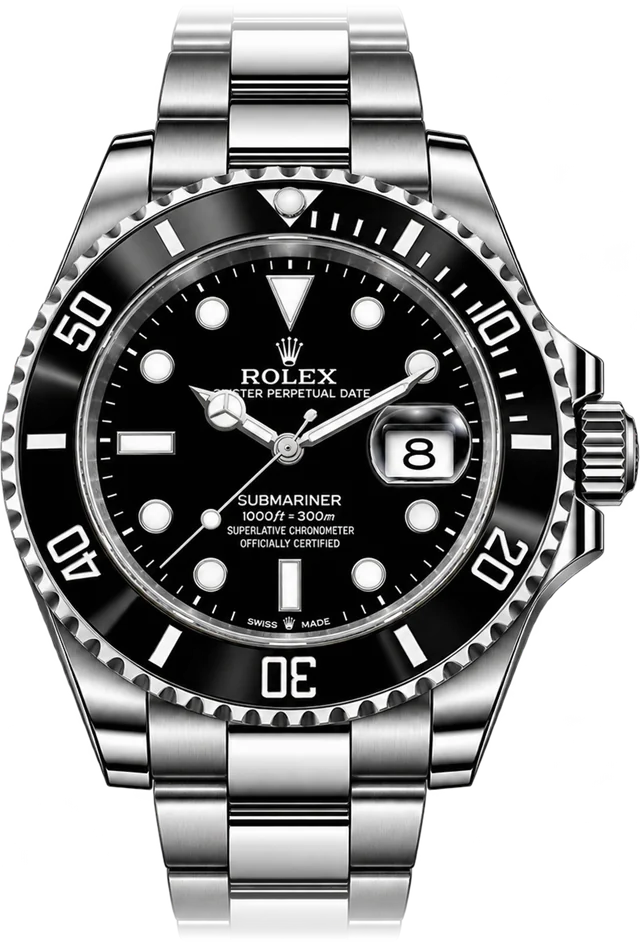
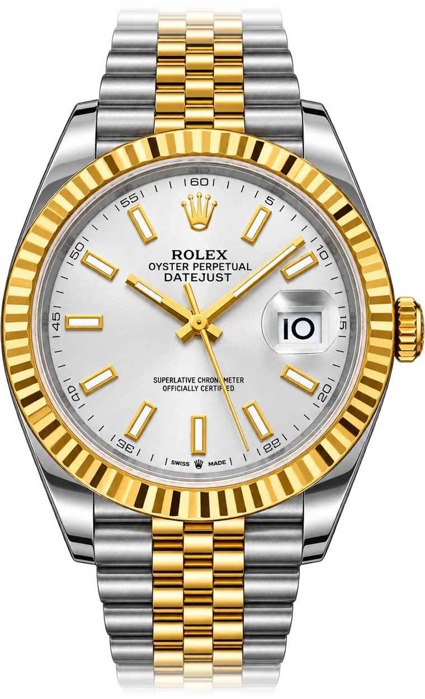

Step 1
Open your account and opt in.
Open a live Black Crown Markets Standard account, verify your identity, and opt in on the Competitions page of the client portal. Already a client? Log in and opt in.



From 1 November, trade gold with Black Crown Markets for a chance to win a Rolex worth up to R250,000.
Already a client? Log in to get ready
18+. Terms and conditions apply. Watches shown are for illustration only. CFDs are high-risk, leveraged products and you could lose all the money you invest. Black Crown Markets is an authorised FSP (No. 54549). Rolex is a registered trademark of Rolex SA, which does not sponsor this competition.
Four steps between you and the draw.
Open a live Black Crown Markets Standard account, verify your identity, and opt in on the Competitions page of the client portal. Already a client? Log in and opt in.
Make a deposit in the client portal. Only deposit money you can afford to lose.
Trade gold (XAU/USD) on your Standard account while the draw is open. Trades closed within 60 seconds don't count.
0.10 lots = 1 entry
Every 0.10 lots of gold you trade on a Standard account adds one entry to the live lucky draw. Your lots add up across trades.
Watches shown are for illustration only. The prize may differ.
Please read these before you enter.
Trading carries risk. CFDs are complex instruments and come with a high risk of losing money rapidly due to leverage. You could lose all the money you invest. Only trade with money you can afford to lose.
Trademarks. Rolex is a registered trademark of Rolex SA. Rolex SA does not sponsor this competition and is not affiliated with Black Crown Markets.
Already a client? Log in to get ready
18+. Terms and conditions apply. Watches shown are for illustration only. CFDs are high-risk, leveraged products.